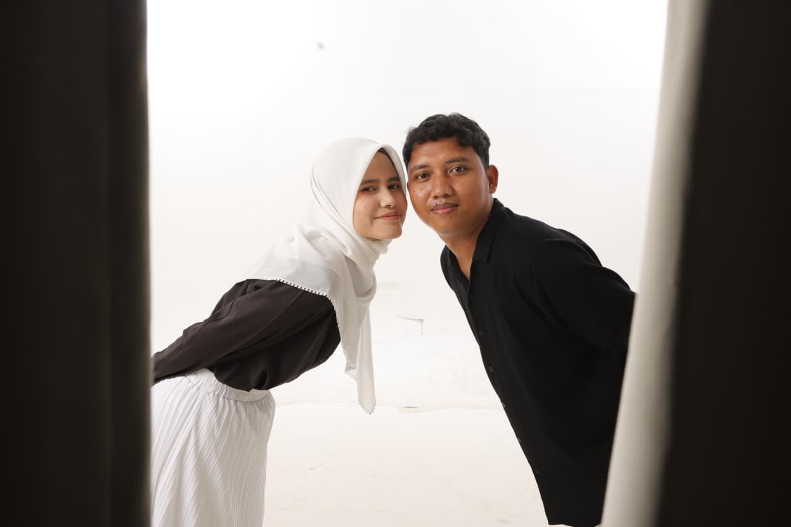
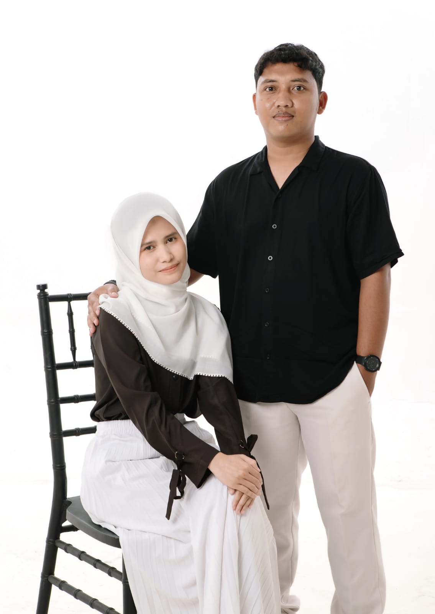
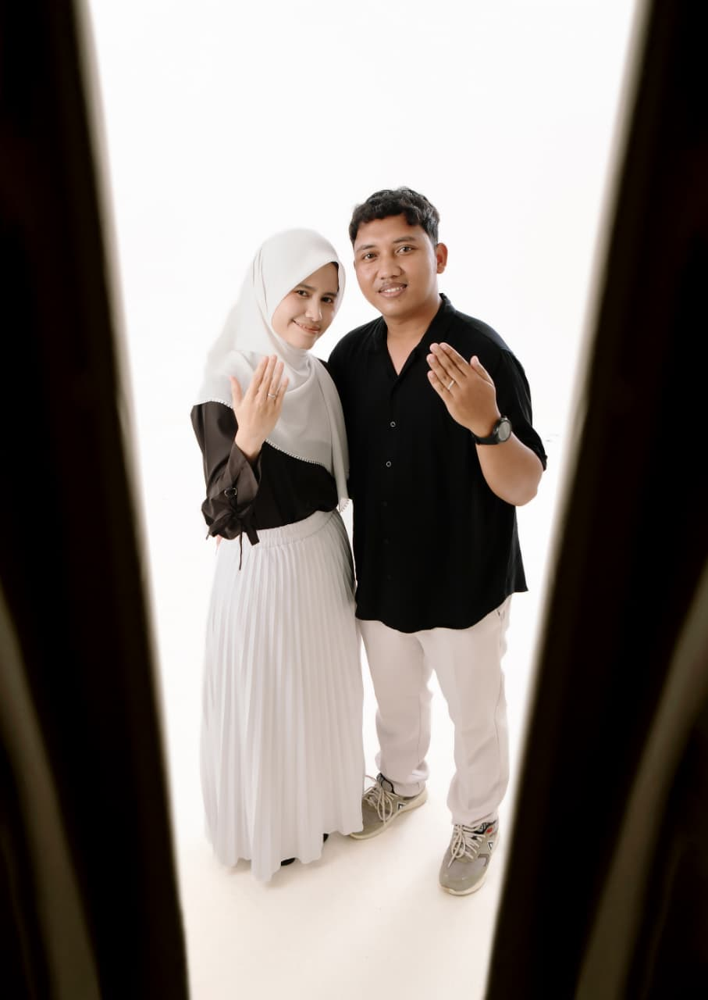

The Wedding Of
Nida & Sidik
Selasa, 05 Januari 2027
Menuju Hari Bahagia
Sampurasun · Rahayu
Bismillahirrahmanirrahiim
Assalamu’alaikum Warahmatullahi Wabarakatuh
Maha suci Allah yang telah menciptakan makhluk-Nya berpasang-pasangan, semoga ridho-Mu tercurah mengiringi pernikahan putra putri kami :

Mempelai Pria
Sidik Santoso A.Md.
Putra Kedua Bapak Suwarno (Alm) dan Ibu Sularni (Almh)
Koncang Rt 003 Rw 10 Desa Bangsri
Kec. Karangpandan Kab. Karanganyar Jawa Tengah

Mempelai Wanita
Nida Ankhoviyya S.Pd.
Putri Kedua Bapak Drs. Ahmad Lili dan Ibu Nuryani S.Pd.I.
Kp Babakan Kondang Rt 019 Rw 006 Desa Pasanggrahan
Kec. Kasomalang Kab. Subang Jawa Barat
Save The Date
Rangkaian Acara
Dengan memohon rahmat dan ridho Allah SWT, kami bermaksud menyelenggarakan pernikahan putra-putri kami yang insya Allah akan diselenggarakan pada :
Selasa, 05 Januari 2027
Di Kediaman Mempelai Wanita
Kampung Babakan Kondang Rt 019 Rw 006 Desa Pasanggrahan
Kecamatan Kasomalang Kabupaten Subang Jawa Barat
Galeri
Momen Kami



Tanda Kasih
Kirim Hadiah
Doa restu Bapak/Ibu/Saudara/i adalah hadiah terindah bagi kami. Bagi yang berhalangan hadir dan berkenan memberikan tanda kasih, dapat melalui :